Lecture 13: Transactions
一、事务概念 (Transaction Concept)
1.1 事务定义
- 事务 是一组程序执行单元，涉及对数据库中多个数据项的访问和可能的更新。
- 示例：从账户 A 转账 50 美元到账户 B：
- 关键问题：
- 故障：如硬件故障或系统崩溃。
- 并发执行：多个事务同时运行可能导致数据不一致。
1.2 ACID 属性
数据库系统必须保证事务的以下属性以维护数据完整性：
- 原子性 (Atomicity)：
- 事务的所有操作要么全部执行，要么全部不执行。
- 示例：若转账事务在第 3 步后崩溃，A 减少了 50 美元但 B 未增加，系统需回滚以避免“钱丢失”。
- 一致性 (Consistency)：
- 事务执行前后，数据库保持一致状态。
- 示例：A 和 B 的总和在转账前后应保持不变。
- 包括显式约束（如主键、外键）和隐式约束（如账户余额总和等于现金持有量）。
- 隔离性 (Isolation)：
- 并发执行的事务互不干扰，中间结果对其他事务不可见。
- 示例：若另一事务在第 3 步后读取 A 和 B，会看到不一致的总和（减少了 50 美元）。
- 持久性 (Durability)：
- 事务成功提交后，其更改永久保存，即使发生系统故障。
- 示例：转账完成后，即使系统崩溃，A 和 B 的新余额必须保留。
1.3 事务执行中的问题
- 原子性问题：部分执行的事务更新不应反映到数据库。
- 隔离性问题：并发执行可能导致中间状态可见。
- 一致性问题：错误的事务逻辑可能破坏数据库一致性。
二、并发执行 (Concurrent Executions)
2.1 并发执行的优势
- 提高资源利用率：一个事务用 CPU 时，另一个可访问磁盘。
- 缩短响应时间：短事务无需等待长事务完成。
- 提高吞吐量：单位时间内处理更多事务。
2.2 并发控制
- 并发控制机制：确保隔离性，防止数据不一致。
- 具体方案将在后续章节详细讨论。
2.3 并发异常
并发执行若无控制，可能导致以下问题：
- 丢失更新 (Lost Update)：
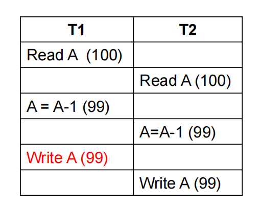
结果：A = 99，但应为 98（两次减 1 只生效一次）
- 脏读 (Dirty Read)：
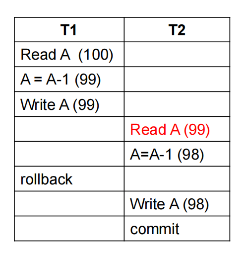
T2 读取了 T1 未提交的数据，若 T1 回滚，T2 使用了错误值。
- 不可重复读 (Unrepeatable Read)：
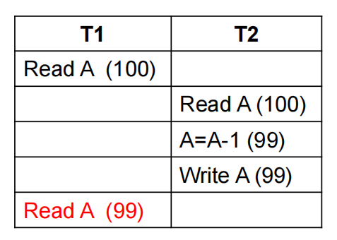
T1 两次读取 A，值不同。
- 幻读 (Phantom Problem)：
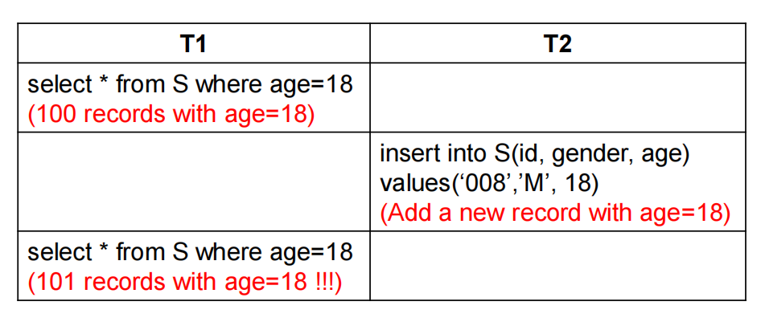
T1 两次查询结果记录数不同，因 T2 插入了新记录。
三、串行化 (Serializability)
3.1 调度 (Schedule)
- 调度：指定并发事务指令执行顺序的序列。
- 串行调度：事务按顺序逐一执行，无并发。
- 要求：
- 包含所有事务的所有指令。
- 保持每个事务内部指令顺序。
- 事务结束：
- 成功：以
commit结束。 - 失败：以
abort结束。
- 成功：以
3.2 串行化定义
- 串行化：一个（可能是并发的）调度如果等价于某个串行调度，则称其为可串行化的；一个调度等价于某个串行调度。
- 假设：每个事务单独执行时保持数据库一致性。
- 类型：
- 冲突串行化 (Conflict Serializability)。
- 视图串行化 (View Serializability)。
3.3 示例调度
- Schedule 1 (串行调度 T1 → T2)：
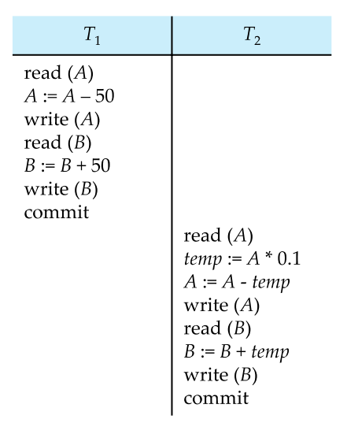
- Schedule 3 (并发但串行化)：
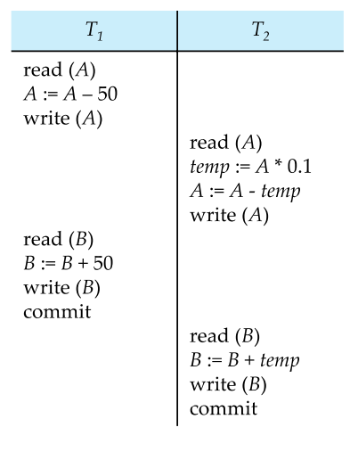
3.4 冲突串行化 (Conflict Serializability)
3.4.1 定义
- 冲突串行化是指一个调度（schedule）可以通过交换非冲突指令，转换为某个串行调度（serial schedule，即事务按顺序逐一执行的调度），且保持冲突操作的顺序不变。
- 冲突指令：两个指令冲突，当且仅当：
- 它们来自不同事务。
- 访问同一数据项（如变量 Q）。
- 至少一个是写操作。
- 冲突类型：
read(Q)vsread(Q)：不冲突，因为读操作不修改数据。read(Q)vswrite(Q)：冲突，写操作可能改变读到的值。write(Q)vsread(Q)：冲突，读操作依赖于写操作的结果。write(Q)vswrite(Q)：冲突，后一个写操作会覆盖前一个。
3.4.2 冲突等价
- 冲突等价：如果调度 S 可以通过一系列非冲突指令的交换，转换为调度 S'，则 S 和 S' 是冲突等价的。
- 关键点：交换非冲突指令不会改变事务的结果，因为非冲突指令的执行顺序无关紧要。
- 目标：通过交换，将并发调度转换为某个串行调度（如 T1 → T2 或 T2 → T1）。
3.4.3 示例分析
考虑以下调度（Schedule 3）：
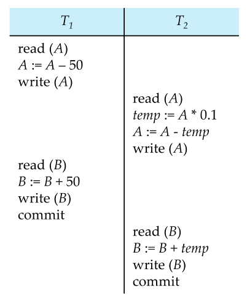
分析：
-
冲突操作：
- T1 的
write(A)和 T2 的read(A)：冲突，因为 T1 先写 A，T2 后读 A，顺序不可交换。 - T1 的
write(B)和 T2 的read(B)：冲突，T1 先写 B，T2 后读 B。
- T1 的
-
尝试交换非冲突指令：
- 可以将 T2 的
read(A), temp := A * 0.1, write(A)整体移到 T1 的write(A)之前，因为这些指令与 T1 的read(B), B := B + 50, write(B)不冲突（操作不同数据项 A 和 B）。 - 类似地，T2 的
read(B), B := B + temp, write(B)可移到 T1 的write(B)之前。
- 可以将 T2 的
-
结果：通过交换，Schedule 3 可转换为串行调度 T1 → T2：
-
结论：Schedule 3 是冲突串行化的，等价于串行调度 T1 → T2。
3.4.4 前趋图测试
- 前趋图：用于测试冲突串行化。
- 节点：每个事务（如 T1, T2）。
- 边：若 T_i 的操作先于 T_j 的冲突操作访问同一数据项，则有边 T_i → T_j。
- 无环：调度是冲突串行化的。
- 有环：调度非冲突串行化。
-
示例前趋图（基于 Schedule 3）：
graph TD T1 --> T2
T1 的 write(A) 先于 T2 的 read(A)，T1 的 write(B) 先于 T2 的 read(B)，故 T1 → T2，无环，确认冲突串行化。
3.4.5 图表示例
以下是一个更复杂的调度：
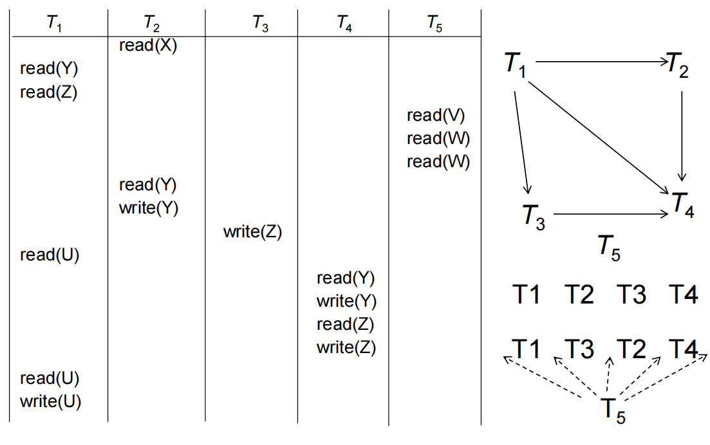
结论：有环，调度不是冲突串行化的。
3.5 视图串行化 (View Serializability)
3.5.1 定义
- 视图串行化：一个调度 S 是视图串行化的，如果它与某个串行调度 S' 视图等价，即两者的执行结果在以下方面相同：
- 初始读：每个数据项的首次读取来自同一事务。
- 读写依赖：每个读操作读取的写操作来源相同。
- 最终写：每个数据项的最后写操作由同一事务完成。
- 特点：
- 视图串行化比冲突串行化更宽松，包含所有冲突串行化调度。
- 允许“盲写”（blind write），即事务不读取直接写入。
3.5.2 视图等价示例
考虑以下调度：
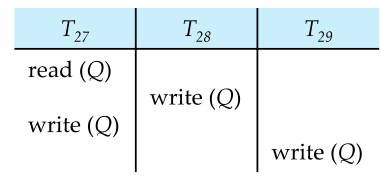
- 构建前趋图：
- 若 \(T_i\) 的操作先于\(T_j\) 的冲突操作访问 Q，则有边 \(T_i\) → \(T_j\)。
T27: read(Q)→T28: write(Q)（T27 先读，T28 后写）。T28: write(Q)→T27: write(Q)（T28 先写，T27 后写）。T27: write(Q)→T29: write(Q)（T27 先写，T29 后写）。
- 前趋图：
graph TD
T27 --> T28
T28 --> T27
T27 --> T29
结果：存在环（T27 → T28 → T27），说明调度可能非冲突串行化。
3.5.3 视图串行化的意义
- 优势：允许更多并发调度，尤其是包含盲写的场景。
- 缺点：测试视图串行化是 NP 完全问题，计算复杂，实际数据库中较少直接使用。
- 关系：所有冲突串行化调度都是视图串行化的，但反之不一定。
四、测试串行化 (Testing for Serializability)
我们一般用前趋图来测试
4.2 冲突串行化测试
- 条件：前趋图无环。
- 算法：循环检测，复杂度 O(n²) 或 O(n+e)。
- 结果：若无环，可通过拓扑排序得到串行顺序，如 T5 → T1 → T4。
4.3 视图串行化测试
- 复杂度：NP 完全问题，无高效算法。
- 方法：检查充分条件即可。
五、可恢复性 (Recoverability)
5.1 可恢复调度
定义：若 \(T_j\) 读取 \(T_i\) 写入的数据，则 \(T_i\) 须在 \(T_j\) 提交前提交。
不可恢复示例：
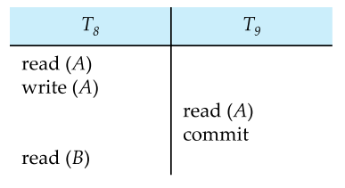
如果事务T8需要中止，即便 T8 回滚后，T9 已提交，无法恢复。
5.2 级联回滚 (Cascading Rollbacks)
5.2.1 定义
- 级联回滚是指当一个事务（例如 \(T_i\)）失败并回滚（abort）时，因其他事务（例如 \(T_j\)）读取了 \(T_i\) 的未提交数据（脏数据），这些依赖事务也必须回滚，形成连锁反应。
- 原因：事务间未提交数据的依赖性破坏了数据库的一致性。
- 影响：级联回滚可能导致大量事务回滚，增加系统开销并延长恢复时间。
5.2.2 机制
- 当事务 \(T_i\) 回滚时，数据库系统需检查哪些事务读取了 \(T_i\) 的未提交写操作。
- 如果 \(T_j\) 读取了 \(T_i\) 的数据，且 \(T_i\) 回滚，\(T_j\) 的结果可能基于无效数据，因此 \(T_j\) 也需回滚。
- 该过程可能进一步触发更多事务的回滚，形成“级联”效应。
5.2.3 示例分析
考虑以下调度：
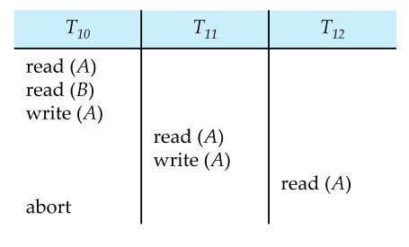
- 操作分析：
- T10：
read(A), write(A)，将 A 的值写入（未提交）。 - T11：
read(A)读取 T10 的未提交值，write(A)基于此值更新 A。 - T12：
read(A)读取 T11 的未提交值。 - T10 发生
abort，因故障或错误回滚，A 的更改被撤销。
- T10：
- 级联回滚过程：
- T10 回滚，A 恢复到 T10 读入前的值。
- T11 读取了 T10 的未提交
write(A)，其结果无效，T11 必须回滚。 - T12 读取了 T11 的未提交
write(A)，其结果也无效，T12 必须回滚。
- 结果：T10、T11、T12 全部回滚，形成了级联回滚。
- 问题：若 T11 和 T12 已执行大量操作，回滚成本高，影响系统性能。
5.2.4 前趋图视角
- 构建依赖关系：
- T10 → T11（T11 读 T10 的 A）。
- T11 → T12（T12 读 T11 的 A）。
-
前趋图：
graph TD T10 --> T11 T11 --> T12
T10 的回滚触发 T11 和 T12 的依赖回滚，形成级联。
5.3 无级联调度 (Cascadeless Schedules)
5.3.1 定义
- 无级联调度是指事务 \(T_j\) 只能读取已由事务 \(T_i\) 提交（commit）的数据。
- 约束：任何读操作（
read(Q)）必须发生在写操作（write(Q)）的提交之后。 - 特点：无级联调度天然避免级联回滚，且一定是可恢复的调度。
5.3.2 可恢复性保证
- 可恢复调度：如果 \(T_j\) 读取了 \(T_i\) 的数据，\(T_i\) 必须在 \(T_j\) 提交前提交。
- 无级联调度满足这一条件，因为 \(T_j\) 只读已提交数据，\(T_i\) 的回滚不会影响 \(T_j\)。
- 数学表示：若 S 是一个无级联调度，则对所有 \(T_i\) 和 \(T_j\)，若 \(T_j\) 读 \(T_i\) 的
write(Q)，则 \(T_i\) 的commit必在 \(T_j\) 的read(Q)之前。
5.3.3 示例分析
考虑以下无级联调度：
| T10 | T11 | T12 |
|---------|---------|---------|
| read(A) | | |
| write(A)| | |
| commit | | |
| | read(A) | |
| | write(A)| |
| | commit | |
| | | read(A) |
| | | write(A)|
| | | commit |
- 操作分析：
- T10：
read(A), write(A), commit，A 的更改已提交。 - T11：
read(A)读取 T10 提交后的值，write(A), commit。 - T12：
read(A)读取 T11 提交后的值，write(A), commit。
- T10：
- 级联回滚检查：
- 若 T10 回滚，A 恢复到 T10 前的值，但 T11 和 T12 读取的是提交后的值，不受影响。
- 无依赖于未提交数据，无级联回滚。
- 结果：调度是可恢复的，且避免了级联回滚。
5.3.4 对比级联调度
- 级联调度（如 5.2 示例）：T10 回滚导致 T11 和 T12 回滚。
- 无级联调度：T10 回滚仅影响 T10 本身，其他事务不受影响。
- 效率：无级联调度减少了回滚开销，适合高并发场景。
5.3.5 实现方法
- 锁定协议：使用两阶段锁定（2PL），确保写操作提交前不释放锁，其他事务无法读未提交数据。
- 时间戳：通过时间戳排序，确保读操作只访问已提交版本。
- 多版本控制：维护数据多个版本，事务读取已提交的快照。
5.4 图表辅助理解
以下是一个时间线图，展示级联回滚与无级联调度的差异：
sequenceDiagram
participant T10
participant T11
participant T12
T10->>T10: read(A), write(A)
T10->>T11: T11 reads T10's uncommitted A
T11->>T11: write(A)
T11->>T12: T12 reads T11's uncommitted A
T12->>T12: write(A)
T10-->>T10: abort
T11-->>T11: rollback (cascading)
T12-->>T12: rollback (cascading)
Note right of T12: Cascading Rollback
rect rgb(200, 255, 200)
T10->>T10: read(A), write(A)
T10->>T10: commit
T11->>T11: read(A) from committed T10
T11->>T11: write(A)
T11->>T11: commit
T12->>T12: read(A) from committed T11
T12->>T12: write(A)
T12->>T12: commit
Note right of T12: Cascadeless Schedule
end
- 级联回滚：T10 回滚触发 T11 和 T12 回滚。
- 无级联调度：每个事务只读已提交数据，独立回滚。
六、隔离性实现 (Implementation of Isolation)
6.1 并发控制
- 目标：确保调度是串行化的、可恢复的、最好无级联。
- 协议：
- 锁定 (Locking)：
- 共享锁 (Shared)：多事务可读。
- 排他锁 (Exclusive)：单事务可写。
- 时间戳 (Timestamps)：
- 事务开始时分配时间戳。
- 数据项记录读写时间戳，检测顺序。
- 多版本并发控制 (MVCC)：
- 维护数据多个版本，事务读取快照。
- 锁定 (Locking)：
6.2 SQL 隔离级别
- Serializable：默认，最高隔离。
- Repeatable Read：重复读一致，但可能有幻读。
- Read Committed：仅读已提交数据。
- Read Uncommitted：可读未提交数据。
- 设置：
- SQL：
SET TRANSACTION ISOLATION LEVEL SERIALIZABLE - JDBC：
connection.setTransactionIsolation(Connection.TRANSACTION_SERIALIZABLE)
- SQL：
6.3 弱一致性
- 场景：如统计查询可接受近似值。
- 优点：提升性能。
- 注意：某些系统默认非串行化（如 Oracle 的快照隔离）。
6.4 谓词锁 (Predicate Locks)
6.4.1 问题背景：幻读与元组级锁的局限
- 幻读问题：在并发执行中，一个事务 T1 执行查询（如
SELECT），另一个事务 T2 插入或删除匹配查询条件的数据，导致 T1 重复查询时看到不同结果（“幻影”记录）。 - 元组级锁的不足：
- 传统锁（如行级锁）只锁定具体的元组（行），无法锁定满足特定条件的记录集。
- 示例：T1 锁定表
instructor中 salary > 90000 的某些行，但 T2 插入新行（salary = 100000）时，未锁定，导致 T1 重复查询时发现“新记录”。
- 后果：幻读违反了隔离性（Isolation），特别是 Serializable 隔离级别的要求。
6.4.2 示例分析
考虑以下并发场景（基于课件中的示例）：
-- T1: 查询 salary > 90000 的记录
T1: SELECT * FROM instructor WHERE salary > 90000;
-- 假设返回 5 条记录
-- T2: 插入新记录
T2: INSERT INTO instructor ('11111', 'WenTY', 'IS', 100000);
-- T1: 再次查询
T1: SELECT * FROM instructor WHERE salary > 90000;
-- 现在返回 6 条记录（包括新插入的记录）
- 问题：
- T1 第一次查询时看到 5 条记录，第二次查询看到 6 条记录。
- 即使 T1 对已查询的行加了锁，新插入的行（幻影）未被锁定，导致不一致。
- 元组级锁限制：
- T1 只能锁定现有行（如 salary = 95000 的行），但无法锁定“salary > 90000”这一条件下的潜在新行。
- T2 的插入操作绕过了现有锁，引发幻读。
6.4.3 谓词锁的定义
- 谓词锁：一种高级锁机制，锁定满足特定条件的记录集（谓词），而不仅是具体的元组。
- 谓词：查询条件（如
WHERE salary > 90000），表示一组可能满足条件的记录。 - 工作原理：
- 当 T1 执行查询并加谓词锁时，系统锁定所有当前和未来可能满足
salary > 90000的记录。 - T2 的插入操作若影响该谓词（例如插入 salary = 100000），将被阻塞，直到 T1 释放锁。
- 当 T1 执行查询并加谓词锁时，系统锁定所有当前和未来可能满足